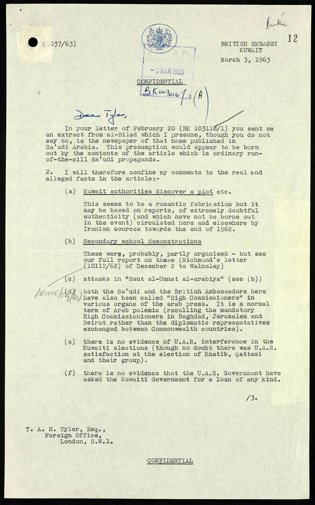

1963 · British Embassy letter on relations with the United Arab Republic
Jassim Al-Qatami elected to the first National Assembly
What it is
Answering a list of claims about Egyptian interference, the Embassy says there is no evidence the UAR interfered in Kuwait's elections, though it was no doubt pleased at the election of Al-Khatib, Al-Qatami and their group.
Why it matters
The British record of Jassim's election to Kuwait's first National Assembly in 1963.
Who is meant
The same Jassim Al-Qatami as the records that give his full name: Director of Police, resigned at Suez, later a nationalist member of the National Assembly.
Page copies

Original text
English translation
Others named
Sources
The National Archives, London, digitised by the Arabian Gulf Digital Archive (agda.ae). Images reproduced by permission of The National Archives, London, England.
Archive reference
- FO 371/168731 · Political relations: UAR
How this text was made: Typed from the archive's own text reading of the scan, corrected against the scan where the reading was garbled. … marks text left out. Arabic translation by Claude; please review.
Open in the interactive site